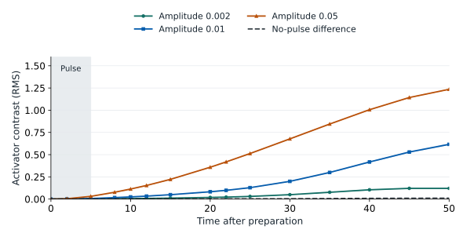
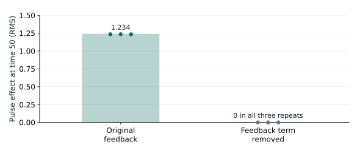

Evaluation
Evaluating a prediction function
A predictor returns an empirical distribution of possible trajectories. The evaluator compares it with independent physical realizations on programs fixed before grading.
The score
A case is one action program and its measurement queries, run from the laboratory's prepared state. Within a case, a group selects scalar readings to score together: for example, one field at all 13 sensors on an instrument at several times. Each selected reading is one coordinate of the group's vector.
For a fixed case c and group g, let fik and ojk be forecast and observed readings at coordinate k. “Scaled” means dividing both by the same positive, predeclared scale sk, expressed in that reading's native units:
The resulting vectors are dimensionless. Scales determine how much a difference in each physical quantity contributes; they are fixed before grading, not estimated from the submitted predictions or grading truths. For a group with d coordinates, use the root mean square distance:
With M forecast members and N independent truth realizations, the energy score for this group in this case is:
The second term accounts for the predictor's spread. The implementation includes all ordered forecast pairs, including self-pairs. It scores the returned empirical distribution; finite sampling can therefore affect the score even for the correct stochastic process.
If case c has Gc groups, its score Sc is their equal mean. The primary score S is the equal mean over the suite's C cases:
Groups have equal weight even when they contain different numbers of coordinates. Cases have equal weight even when they contain different numbers of groups.
The current suites request 64 forecast members and use two saved independent truth realizations per program. The score is dimensionless and has no universal “percent accurate” interpretation.
Framework reward
The Verifiers reward is computed from the primary joint energy score S defined above:
Lower joint energy gives higher reward. The reward is not a percentage accuracy.
| Outcome | Reporting |
|---|---|
| Valid graded predictor | Finite scientific error S and its mapped reward R. |
| Delivered artifact fails the prediction contract | Invalid result; infinite error and zero reward. |
| Completed rollout delivers no predictor | Zero framework reward; no scientific predictor score, with the outcome retained. |
| Infrastructure or harness error prevents completion | Verifiers error handling; retained separately from a completed model attempt. |
Building a suite from BF's trail response
BF's evaluation grew out of an investigation of memory in its fields. In fresh simulations, localized activator structures moved through a slowly relaxing trail. The trail has zero diffusion and a relaxation time of 200 time units. Erasing only that trail, while preserving the other starting fields and future noise, changed later activator readings. That suggested a useful prediction problem: could an agent learn how a world's past affects its response to a new intervention?
A brief pulse changes later motion
We took the saved endpoint of a 2,500-time-unit simulation and placed the probes around an activator maximum. Every experiment restored the same fields and instrument poses. To investigate memory through an action the agent could actually use, we injected a positive pulse into the trail field for five time units and followed the response until time 50.
The field snapshots in Worlds show the effect: the activator follows a different spatial trajectory after the pulse, with a visible difference still present 45 time units after injection ends. This observation motivated measurements of the later response, not just the immediate source transient.
The effect is visible through the sensors
The agent sees sensor readings rather than full field images. We therefore repeated the experiment at three trail-pulse amplitudes and measured the activator through the 13-position array. Each program had three independent noise realizations. At each time, we compared the activator readings with the mean of three no-pulse runs and took the root mean square (RMS) difference across the sensor positions.

At time 50, pulse amplitudes 0.002, 0.01, and 0.05 produced RMS contrasts of 0.121, 0.616, and 1.235, respectively. The corresponding no-pulse difference was 0.0106. Stronger trail perturbations produced larger later changes, and even the weakest tested pulse remained distinguishable on this descriptive comparison. These are response magnitudes in field units, not evaluation scores.
The important signal is in the activator readings, although the source acted on the trail field. A predictor therefore needs to account for how one field changes another, and for how that change develops after the source switches off.
Does trail feedback explain the response?
To test the mechanism, we repeated the pulse/no-pulse comparison after removing only the bilinear reaction term that couples the trail to the activator. Each pair began with identical fields and received identical future noise. This isolates the effect of the pulse within each version of the equations.

With the original equations, the three effects at time 50 were 1.2346, 1.2348, and 1.2338 RMS. With the feedback term removed, the pulse and no-pulse activator readings were identical in all three repetitions. Together with the ordinary pulse experiments, this supports a specific mechanism for this preparation: a persistent trail perturbation changes later activator dynamics through feedback.
Turn the observation into prediction tests
This evidence motivates cases that distinguish trail memory from ordinary activator forcing. BF's eleven programs include no intervention, weak and strong activator pulses, three trail-pulse amplitudes, an activator pulse followed by a trail pulse, a delayed activator pulse, a fast-inhibitor pulse, a translated probe, and a dilated probe.
The combined case asks the predictor to carry the consequences of an earlier intervention into its response to a later one. Expressed in the current apparatus interface, it applies an activator pulse on port 1, then a trail pulse on port 2:
actions = [
{"t": 0, "kind": "inject", "device": 0, "port": 1, "amp": 0.3, "dur": 5},
{"t": 10, "kind": "inject", "device": 0, "port": 2, "amp": 0.01, "dur": 5},
]
times = [0, 2, 5, 8, 10, 12, 15, 20, 22, 25, 30, 35, 40, 45, 50]
queries = [{"sensor": s, "t": times} for s in ("device0", "device1", "global")]Those actions and queries define one case. The early readings capture the response during and shortly after injection; the later readings capture persistence. Using both arrays adds spatial information, while probe translation and dilation test whether the predictor can handle measurements at different positions.
Score the measurements that carry the effect
BF uses four joint score groups in each case. Activator histories capture the evolving response; local feedback and trail readings retain information about its internal dynamics; the wider array samples the response over a larger region. The physical field names below are available to the suite author, while the agent sees numbered ports.
| Group | Field and instrument | Times | Coordinates d | Scale sk |
|---|---|---|---|---|
| Activator history | Activator (port 1), device 0 | 5, 10, 20, 30, 40, 50 | 6 × 13 = 78 | 1.0 |
| Local feedback | Feedback channel x0 (port 3), device 0 | 5, 10, 20, 30, 50 | 5 × 13 = 65 | 0.5 |
| Slow memory | Trail (port 2), device 0 | 5, 10, 20, 30, 50 | 5 × 13 = 65 | 0.05 |
| Wide spatial response | Activator (port 1), device 1 | 10, 30, 50 | 3 × 19 = 57 | 1.0 |
For the slow-memory group, one forecast member becomes a 65-coordinate vector, with every entry divided by 0.05. A trail discrepancy of 0.01 therefore becomes 0.2 in scaled units, as does an activator discrepancy of 0.2 with scale 1.0. These choices make the small-amplitude trail contribute meaningfully alongside the activator.
The programs, groups, and scales are frozen before generating two independent grading truths per case, using noise seeds separate from the exploratory runs. The evaluator calculates four group energy scores per case, averages them into Sc, then averages the eleven case scores into S. The Results page compares predictors on the completed suites.
The original preparation report preserves the full investigation. The preparation workflow provides the recipes and commands; the figure source record and sensor arrays preserve the evidence used here.
Current evaluation preparations
The registry distinguishes preserved worlds from eval-ready preparations. Preservation keeps a world and its available provenance. Eval-ready adds an exact starting state, apparatus, suite, truth data, and validation evidence that the environment can run. It describes this particular preparation and suite, rather than every use of the genome.
| Preparation | Ports | Prediction programs |
|---|---|---|
bf_trail_lab | 4 | 11 |
p4g2_044 | 12 | 15 |
xv_rotor_lab | 6 | 11 |
Each run selects a preparation explicitly. There is no default that scans the registry or evaluates every ready world; missing selection is an error. One agent rollout investigates one selected laboratory and submits one predictor, which is then graded on that suite's programs. The reproduction instructions show the three configs.